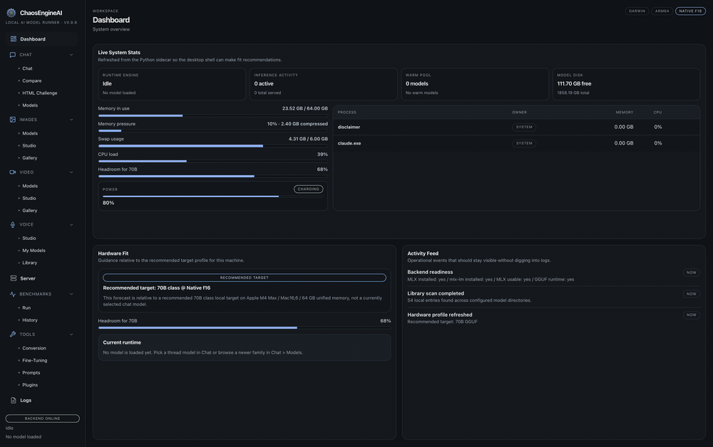

Your local AI workstation.
Voice, chat, images, video, benchmarks, and an OpenAI-compatible API — local, in one desktop app. Nothing is uploaded. Powered by llama.cpp, Apple MLX, and speculative decoding for faster replies.
macOS · Linux · Windows · signed in-app updates

New in v0.9.9
Voice, new models, and video with sound.
Press Call in Chat and talk. The model answers out loud, and you can talk over it to interrupt. Voice Studio transcribes recordings with speaker labels. Nothing is uploaded.
Nemotron 3.5 Bolt ships with its own DFlash drafter: about 62 to about 160 tokens per second on an M4 Max.
Text-to-video with sound on Apple Silicon. A 4-second 768×512 clip takes 128 seconds on an M4 Max.
Everything you need, locally.
One desktop app in place of a stack of scripts, notebooks and CLIs.
Voice
Voice calls, dictation and read-aloud in Chat. Transcribe files with speaker labels and export SRT, VTT or text.
Chat
Each thread keeps its own model and runtime settings. Add documents with citations, images for vision models, and tools.
Models
One Models page each for Chat, Images and Video. Every row says whether the model fits your machine.
Image Studio
Recommended settings for your hardware, applied in one click. Sizes up to 4096 px on FLUX.2 and Qwen-Image-2.1.
Video Studio
LTX-2.5 and LTX-2.3 with sound on Apple Silicon. Wan, HunyuanVideo, CogVideoX and Mochi on CUDA.
HTML Challenge
Race 2–4 models on one prompt, with live sandboxed previews and automatic validation.
Benchmarks
Throughput, perplexity and task accuracy. Save runs and compare them side by side.
Local API server
OpenAI-compatible, with LAN mode. Point Cursor, Continue.dev, Goose or Claude Code at it.
10 languages
The whole app is translated into English, German, French, Spanish, Russian, Portuguese, Japanese, Korean and Chinese.
Also included: prompt library, agent tools, MLX conversion, LoRA fine-tuning, plugins, warm model pool, live logs, and signed in-app updates.
Faster code and reasoning. Same output.
The model drafts several tokens ahead and checks them in one pass. The reply is the same as plain decoding, only faster. The backend picks the best path for each model.
- MTPLX — uses the model's own Multi-Token Prediction heads (Qwen3.5/3.6, DeepSeek V3/R1, Qwen3-Coder-Next). 1.8–2.2x on Apple Silicon.
- DFlash — a small draft model proposes, the target verifies. Qwen3-4B: about 53 to 113 tokens per second.
- DDTree — drafts a tree of candidates and keeps the longest correct branch. Hybrid models such as Qwen3.5/3.6 use linear DFlash.
- Fallback — MTPLX falls back to DFlash, DFlash to standard generation.
- Note — creative writing can run slower. Leave it off for stories.
Fit longer chats. Render faster.
Pick a cache strategy from the app, not a shell flag. Install an optional backend, restart, and it appears in the picker.
- Native f16 — full precision, always available
- TurboQuant — a much smaller KV cache for long chats. A memory saver: generation is slower.
- TriAttention — KV cache compression inside vLLM, on Linux + CUDA
- FBCache, TeaCache, TaylorSeer, PAB — skip repeated work in image and video models. FBCache: about 1.8x on FLUX.1-dev.
- MagCache, FasterCache — through chaosengine-cli and the local API
Point your other tools at it.
The built-in OpenAI-compatible server turns the app into a local backend for editors, agents, and CLIs. Copy each snippet, with your API token, from Settings in the app.
Continue.dev
{
"provider": "openai",
"model": "current-model",
"apiBase": "http://127.0.0.1:8876/v1"
}Cursor
Override OpenAI Base URL
http://127.0.0.1:8876/v1
Add your local model id.Goose
GOOSE_PROVIDER=openai
GOOSE_MODEL=current-model
OPENAI_BASE_URL=http://127.0.0.1:8876/v1Claude Code proxy
export ANTHROPIC_BASE_URL=http://127.0.0.1:8876/v1
export ANTHROPIC_AUTH_TOKEN=<your-api-token>chaosengine-cli drives the whole backend.
A typed CLI that reaches every backend route. Script chat, image, video, benchmarks, setup, and diagnostics.
Full-surface coverage
Typed shortcuts for load, prompt, bench, image, video, server, setup, and diagnostics. Generic call <METHOD> <PATH> reaches every other backend route.
Composable output
Python stdlib only. JSON to stdout, composes with jq and CI jobs. Streaming and non-streaming modes with optional inline metrics.
chaosengine-cli load mlx-community/Qwen3.6-35B-A3B-4bit --spec
chaosengine-cli prompt "Write a Rust quicksort" --stream --metrics
chaosengine-cli video-generate "Aurora over a glacier, drone shot" --model Wan-AI/Wan2.1-T2V-1.3BDownload & install.
Signed, cross-platform builds with in-app auto-updates. Source stack: Tauri, React, TypeScript, Rust, Python.